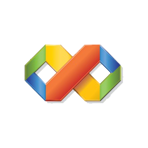

Christophe GACHET
Web Developper
Developpement d'applications web et mobilesMes technologies de prédilection
 |
HTMLL'HyperText Markup Language, généralement abrégé HTML, est le format de données conçu pour représenter les pages web. C'est un langage de balisage permettant d'écrire de l'hypertexte, d'où son nom. |
CSSLes feuilles de style en cascade, généralement appelées CSS de l'anglais Cascading Style Sheets, forment un langage informatique qui décrit la présentation des documents HTML et XML. Les standards définissant CSS sont publiés par le World Wide Web Consortium (W3C). |
|
 |
JavascriptJavaScript est un langage de programmation de scripts principalement employé dans les pages web interactives mais aussi pour les serveurs avec l'utilisation (par exemple) de Node.js. |
 |
RubyRuby est un langage de programmation libre. Il est interprété, orienté objet et multi-paradigme. Le langage a été standardisé au Japon en 2011 (JIS X 3017:2011), et en 2012 par l'Organisation internationale de normalisation (ISO 30170:2012). |
 |
Ruby on RailsRuby on Rails, également appelé RoR ou Rails, est un framework web libre écrit en Ruby. Il suit le motif de conception modèle-vue-contrôleur. Il propose une structure qui permet de développer plus vite et plus intuitivement. |
 |
PHPPHP: Hypertext Preprocessor4, plus connu sous son sigle PHP (acronyme récursif), est un langage de programmation libre5, principalement utilisé pour produire des pages Web dynamiques via un serveur HTTP4, mais pouvant également fonctionner comme n'importe quel langage interprété de façon locale. PHP est un langage impératif orienté objet. |
 |
SQLSQL (sigle de Structured Query Language, en français langage de requête structurée) est un langage informatique normalisé servant à exploiter des bases de données relationnelles. |
|  |
Visual Basic 6Visual Basic (VB) est un langage de programmation événementielle de troisième génération ainsi qu'un environnement de développement intégré, créé par Microsoft pour son modèle de programmation COM. |
 |
LINUXLinux est, au sens restreint, le noyau de système d'exploitation Linux, et au sens large, tout système d'exploitation basé sur le noyau Linux. Cet article couvre le sens large. |